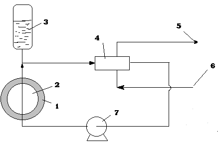

Особенности ядерного реактора как источника теплоты.
При работе реактора в
тепловыводящих элементах (твэлах), а также во
всех его конструктивных элементах в различных
количествах выделяется теплота. Это связано
прежде всего с торможением осколков деления,
бета- и гамма- излучением их, а также ядер,
испытывающих взаимодействие с нейронами, и,
наконец, с замедлением быстрых нейронов. Осколки
при делении ядра топлива классифицируются по
скоростям, соответствующим температуре в сотни
миллиардов градусов.
Действительно, Е = mv2 = 3RT,
где Е - кинетическая энергия осколков, МэВ; R = 1,38·10-23
Дж/К - постоянная Больцмана. Учитывая, что 1
МэВ = 1,6·10-13 Дж, получим 1,6·10-6
Е = 2,07·10-16 Т, Т = 7,7·109 Е.
Наиболее вероятные значения энергии для
осколков деления равны 97 МэВ для легкого осколка
и 65 МэВ для тяжелого. Тогда соответствующая
температура для легкого осколка равна 7,5·1011 К,
тяжелого - 5·1011 К. Хотя достижимая в ядерном
реакторе температура теоретически почти
неограниченна, практически ограничения
определяются предельно допустимой температурой
конструкционных материалов и тепловыделяющих
элементов. Особенность ядерного реактора
состоит в том, что 94% энергии деления
превращается в теплоту мгновенно, т.е. за время, в
течение которого мощность реактора или
плотность материалов в нем не успевает заметно
измениться. Поэтому при изменении мощности
реактора тепловыделение следует без
запаздывания за процессом деления топлива.
Однако при выключении реактора, когда скорость
деления уменьшается более чем в десятки раз, в
нем остаются источники запаздывающего
тепловыделения ( гамма- и бета-излучение
продуктов деления), которые становятся
преобладающими. Мощность ядерного реактора
пропорциональна плотности потока нейронов в нем,
поэтому теоретически достижима любая мощность
Практически же предельная мощность определяется
скоростью отвода теплоты, выделяемой в реакторе.
Удельный теплосъем в современных энергетических
реакторах составляет 102 - 103 МВт/м3,
в вихревых - 104 - 105 МВт/м3.
От реактора теплота отводится
циркулирующим через него теплоносителем.
Характерной особенностью реактора является
остаточное тепловыделение после прекращения
реакции деления, что требует отвода теплоты в
течении длительного времени после остановки
реактора. Хотя мощность остаточного
тепловыделения значительно меньше номинальной,
циркуляция теплоносителя через реактор должна
обеспечиваться очень надежно, так как остаточное
тепловыделение регулировать нельзя. Удаление
теплоносителя из работавшего некоторое время
реактора категорически запрещено во избежание
перегрева и повреждения тепловыделяющих
элементов.
Энергетический ядерный реактор - это устройство в котором осуществляется управляемая цепная реакция деления ядер тяжелых элементов, а выделяющаяся при этом тепловая энергия отводится теплоносителем. Главным элементом ядерного реактора является активная зона. В нем размещается ядерное топливо и осуществляется цепная реакция деления. Активная зона представляет собой совокупность определенным образом размещенных тепловыделяющих элементов, содержащих ядерное топливо. В реакторах на тепловых нейтронах используется замедлитель. Через активную зону прокачивается теплоноситель, охлаждающий тепловыделяющие элементы. В некоторых типах реакторов роль замедлителя и теплоносителя выполняет одно и то же вещество, например обычная или тяжелая вода.

Схема гомогенного реактора: 1-корпус реактора, 2-активная зона, 3 компенсатор объема, 4-теплообменник, 5-выход пара, 6-вход питательной воды, 7-циркуляционный насос
Для управления работой реактора в активную зону вводятся регулирующие стержни из материалов, имеющих большое сечение поглощения нейтронов. Активная зона энергетических реакторов окружена отражателем нейтронов - слоем материала замедлителя для уменьшения утечки нейтронов из активной зоны. Кроме того, благодаря отражателю происходит выравнивание нейтронной плотности и энерговыделения по объему активной зоны, что позволяет при данных размерах зоны получить большую мощность, добиться более равномерного выгорания топлива, увеличить продолжительность работы реактора без перегрузки топлива и упростить систему теплоотвода. Отражатель нагревается за счет энергии замедляющихся и поглощаемых нейтронов и гамма-квантов, поэтому предусматривается его охлаждение. Активная зона, отражатель и другие элементы размещаются в герметичном корпусе или кожухе, обычно окруженном биологической защитой.
Технические требования для активной зоны.
Активная зона реактора
должна быть спроектирована так, чтобы
исключалась возможность непредусмотренного
перемещения ее составляющих, приводящего к
увеличению реактивности. Основной
конструктивной деталью гетерогенной активной
зоны является твэл, в значительной мере
определяющий ее надежность, размеры и стоимость.
В энергетических реакторах, как правило,
используются стержневые твэлы с топливом в виде
прессованных таблеток двуокиси урана,
заключенных в оболочку из стали или циркониевого
сплава. Твэлы для удобства собираются в
тепловыделяющие сборки (ТВС), которые
устанавливаются в активной зоне ядерного
реактора.
В твэлах происходит генерация
основной доли тепловой энергии и передача ее
теплоносителю. Более 90% всей энергии,
освобождающейся при делении тяжелых ядер,
выделяется внутрь твэлов и отводится обтекающим
твэлы теплоносителем. Твэлы работают в очень
тяжелых тепловых режимах: максимальная
плотность теплового потока от твэла к
теплоносителю достигает (1 - 2 ) 106 Вт/ м2,
тогда как в современных паровых котлах она равна
(2 - 3 ) 105 Вт/м2. Кроме того, в
сравнительно небольшом объеме ядерного топлива
выделяется большое количество теплоты, т.е.
энергонапряженность ядерного топлива также
очень высока. Удельное тепловыделение в активной
зоне достигает 108 -109 Вт/м3, в то
время как в современных паровых котлах оно не
превышает 107Вт/м3. Большие тепловые
потоки, проходящие через поверхность твэлов, и
значительная энергонапряженность топлива
требуют исключительно высокой стойкости и
надежности твэлов. Помимо этого, условия работы
твэлов осложняются высокой рабочей
температурой, достигающей 300 - 6000С на
поверхности оболочки, возможностью тепловых
ударов, вибрацией, наличием потока нейтронов (
флюенс достигает 1027 нейтрон/м2). К
твэлам предъявляются высокие технические
требования: простота конструкции; механическая
устойчивость и прочность в потоке теплоносителя,
обеспечивающая сохранение размеров и
герметичности; малое поглощение нейтронов
конструкционным материалом твэла и минимум
конструкционного материла в активной зоне;
отсутствие взаимодействие ядерного топлива и
продуктов деления с оболочкой твэлов,
теплоносителем и замедлителем при рабочих
температурах. Геометрическая форма твэла должна
обеспечивать требуемое соотношение площади
поверхности и объема и максимальную
интенсивность отвода теплоты теплоносителем от
всей поверхности твэла, а также гарантировать
большую глубину выгорания ядерного топлива и
высокую степень удержания продуктов деления.
Твэлы должны обладать радиационной стойкостью,
иметь требуемые размеры и конструкцию,
обеспечивающие возможность быстрого проведения
перегрузочных операций; обладать простотой и
экономичностью регенерации ядерного топлива и
низкой стоимостью. В целях безопасности надежная
герметичность оболочек твэлов должна
сохраняться в течение всего срока работы
активной зоны (3 -5 лет) и последующего хранения
отработавших твэлов до отправки на переработку (1
-3 года). При проектировании активной зоны
необходимо заранее установить и обосновать
допустимые пределы повреждения твэлов
(количество и степень повреждения). Активная зона
проектируется таким образом, чтобы при работе на
протяжении всего ее расчетного срока службы не
превышались установленные пределы повреждения
твэлов. Выполнение указанных требований
обеспечивается конструкцией активной зоны,
качеством теплоносителем, характеристиками и
надежностью системы теплоотвода. В процессе
эксплуатации возможно нарушение герметичности
оболочек отдельных твэлов. Различают два вида
такого нарушения: образование микротрещин, через
которые газообразные продукты деления выходят
из твэла в теплоноситель ( дефект типа газовой
плотности) ; возникновение дефектов, при которых
возможен прямой контакт топлива с
теплоносителем. Условия работы твэлов в
значительной мере определяются конструкцией
активной зоны, которая должна обеспечивать
проектную геометрию размещения твэлов и
необходимое с точки зрения температурных
условий распределения теплоносителя. Через
активную зону при работе реактора из мощности
должен поддерживаться стабильный расход
теплоносителя, гарантирующего надежный
теплоотвод. Активная зона должна быть оснащена
датчиками внутриреакторного контроля, которые
дают информацию о распределении мощности,
нейтронного потока, температурных условиях
твэлов и расходе теплоносителя. Активная зона
энергетического реактора должна быть
спроектирована так, чтобы внутренний механизм
взаимодействия нейтронно-физических и
теплофизических процессов при любых возмущениях
коэффициента размножения устанавливал новый
безопасный уровень мощности. Практически
безопасность ядерной энергетической установки
обеспечивается, с одной стороны, устойчивостью
реактора ( уменьшением коэффициента размножения
с ростом температуры и мощности активной зоны), а
с другой стороны - надежностью системы
автоматического регулирования и защиты. С целью
обеспечения безопасности в глубину конструкция
активной зоны и характеристики ядерного топлива
должны исключать возможность образования
критических масс делящихся материалов при
разрушении активной зоны и расплавлении
ядерного топлива. При конструировании активной
зоны должна быть предусмотрена возможность
введения поглотителя нейтронов для прекращения
цепной реакции в любых случаях, связанных с
нарушением охлаждения активной зоны. Активная
зона, содержащая большие объемы ядерного топлива
для компенсации выгорания, отравления и
температурного эффекта, имеет как бы несколько
критических масс. Поэтому каждый критический
объем топлива должен быть обеспечен средствами
компенсации реактивности. Они должны
размещаться в активной зоне таким образом, чтобы
исключить возможность возникновения локальных
критмасс
Реакторы классифицируют по
уровню энергии нейтронов, учасвующих в реакции
деления, по принципу размещения топлива и
замедлителя, целевому назанчению, виду
замедлителя и теплоносителя и их физическому
состоянию.
По уровню энергитических нейтронов:
реакторы могут работать на быстрых нейтронах, на
тепловых и на нейтронах промежуточных (
резонанснсных) энергий и в соотоветсвии с этим
делятся на ректоры на тепловых, быстрых и
промежуточных нейтронах ( иногда для краткости
их называют тепловыми, быстрыми и промежуточными
).
В реакторе на тепловых нейтронах
большая часть деления ядер происходит при
поглощении ядрами делящихся изотопов тепловых
нейтронов. Реакторы, в которых деление ядер
производится в основном нейтронами с энергией
больше 0,5 МэВ, называются реакторами на бысрых
нейтронах. Реакторы, в которых большинство
делений происходит в результате поглощения
ядрами делящихся изотопов промежуточных
нейтронов, называются реакторами на
промежуточных (резонансных) нейтронах.
В настоящее время наибольшее
распространение получили реакторы на тепловых
нейтронах. Для тепловых реакторов характерны
концентрации ядерного топлива 235U в
активной зоне от 1 до 100 кг/м3 и наличие
больших масс замедлителя. Для реактора на
быстрых нейтронах характерны концентрации
ядерного топлива 235U или 239U порядка 1000
кг/м3 и отсутствие замедлителя в активной
зоне.
В реакторах на промежуточных
нейтронах в активной зоне замедлителя очень
мало, и концентрация ядерного топлива 235U в
ней от 100 до 1000 кг/м3.
В реакторах на тепловых нейтронах
деление ядер топлива происходит также при
захвате ядром быстрых нейтронов, но вероятность
этого процесса незначительна (1 - 3 %).
Необходимость замедлителя нейтронов вызывается
тем, что эффективные сечения деления ядер
топлива намного больше при малых значениях
энергии нейтронов, чем при больших.
В активной зоне теплового реактора
должен находиться замедлитель -- вещество, ядра
которого имеют малое массовое число. В качестве
замедлителя применяют графит, тяжелую или легкую
воду, бериллий, органические жидкости. Тепловой
реактор может работать даже на естественном
уране, если замедлителем служит тяжелая вода или
графит. При других замедлителях необходимо
использовать обогащенный уран. От степени
обогащения топлива зависят необходимые
критические размеры реактора, с увеличением
степени обогащения они меньше. Существенным
недостатком реакторов на тепловых нейтронах
является потеря медленных нейтронов в
результате захвата их замедлителем,
теплоносителем, конструкционными материалами и
продуктами деления. Поэтому в таких реакторах в
качестве замедлителя, теплоносителя и
конструкционных материалов необходимо
использовать вещества с малыми сечениями
захвата медленных нейтронов.
В реакторах на промежуточных
нейтронах, в которых большинство актов
деления вызывается нейтронами с энергией, выше
тепловой (от 1 эВ до 100 кэВ ), масса замедлителя
меньше, чем в тепловых реакторах. Особенность
работы такого реактора состоит в том, что сечение
деления топлива с ростом энергии нейтронов в
промежуточной области уменьшается слабее, чем
сечение поглощения конструкционных материалов и
продуктов деления. Таким образом, растет
вероятность актов деления по сравнению с актами
поглощения. Требования к нейтронным
характеристикам конструкционных материалов
менее жесткие, их диапазон шире. Следовательно,
активная зона реактора на промежуточных
нейтронах может быть изготовлена из более
прочных материалов, что дает возможность
повысить удельный теплосъем с поверхности
нагрева реактора. Обогащение топлива делящимся
изотопом в промежуточных реакторах вследствие
уменьшения сечения должно быть выше, чем в
тепловых. Воспроизводство ядерного топлива в
реакторах на промежуточных нейтронах больше, чем
в реакторе на тепловых нейтронах.
В качестве теплоносителей в
промежуточных реакторах используется вещество,
слабо замедляющие нейтроны. Например жидкие
металлы. Замедлителем служит графит, бериллий
т.д.
В активной зоне реактора на
быстрых нейтронах размещаются твэлы с
высокообогащенный топливом. Активная зона
окружается зоной воспроизводства, состоящей из
твэлов, содержащих топливное сырье (обедненный
уран. торий) . Вылетающие из активной зоны
нейтроны захватываются в зоне воспроизводства
ядрами топливного сырья, в результате образуется
новое ядерное топливо. Особым достоинством
быстрых реакторов является возможность
организации в них расширенного воспроизводство
ядерного топлива, т.е. одновременно с выработкой
энергии производить вместо выгоревшего ядерного
топлива новое. Для быстрых реакторов не
требуется замедлитель, а теплоноситель не должен
замедлять нейтроны.
Для обеспечения высокой концентрации
ядерного топлива необходимо достижение
максимального тепловыделения на единицу объема
активной зоны. Это можно осуществить только с
помощью жидкометаллических теплоносителей,
например натрия, калия или энергоемких газовых
теплоносителей, обладающих наилучшими
теплотехническими и теплофизическими
характеристиками, таких как гелий и
диссоциирующие газы. В качестве теплоносителя
можно использовать и пары воды. Паразитный
захват быстрых нейтронов ядрами конструкционных
материалов и продуктов деления крайне
незначительный, поэтому для быстрых реакторов
существует широкий выбор конструкционных
материалов, позволяющих повысить надежность
активной зоны. Следовательно, в них можно достичь
высокой степени выгорания делящихся веществ.
В зависимости от способа размещения
топлива в активной зоне реакторы делятся на
гомогенные и гетерогенные.
В гомогенном реакторе
ядерное топливо, теплоноситель и замедлитель
(если они есть) тщательно перемешаны и находятся
в одном физическом состоянии, т.е. активная зона
полностью гомогенного реактора представляет
жидкую, твердую или газообразную однородную
смесь ядерного топлива, теплоносителя или
замедлителя. Гомогенные реакторы могут быть как
на тепловых, так и на быстрых нейтронах. В таком
реакторе вся активная зона находится внутри
стального сферического корпуса и представляет
жидкую однородную смесь горючего и замедлителя в
виде раствора или жидкого сплава (например,
раствор уранилсульфата в воде, раствор урана в
жидком висмуте), который одновременно выполняет
и функцию теплоносителя.
Ядерная реакция деления происходит в
топливном растворе, находящемся внутри
сферического корпуса реактора, в результате
температура раствора повышается. Горючий
раствор из реактора поступает в теплообменник,
где отдает теплоту воде второго контура,
охлаждается и циркулярным насосом направляется
опять в реактор. Для того чтобы ядерная реакция
не произошла вне реактора, объемы трубопроводов
контура, теплообменника и насосса подобраны так,
чтобы объем горючего, находящегося на каждом
участке контура, были намного ниже критического.
Гомогенные реакторы имеют ряд преимуществ по
сравнению с гетерогенными. Это несложная
конструкция активной зоны и минимальные ее
размеры, возможность в процессе работы без
остановки реактора непрерывно удалять продукты
деления и добавлять свежее ядерное топливо,
простота приготовления горючего, а также то, что
управлять реактором можно, изменяя концентрацию
ядерного топлива.
Однако гомогенные реакторы имеют и
серьезные недостатки. Гомогенная смесь
циркулирующая по контуру, испускает сильное
радиоактивное излучение, что требует
дополнительной защиты и усложняет управление
реактором. Только часть топлива находится в
реакторе и служит для выработки энергии, а другая
часть - во внешних трубопроводах,
теплообменниках и насосах. Циркулирующая смесь
вызывает сильную коррозию и эрозию систем и
устройств реактора и контура. Образование в
гомогенном реакторе в результате радиолиза воды
взрывоопасной гремучей смеси требует устройств
для ее дожигания. Все это привело к тому, что
гомогенные реакторы не получили широкого
распространения.
В гетерогенном реакторе
топливо в виде блоков размещено в замедлителе,
т.е. топливо и замедлитель пространственно
разделены.

Гетерогенный реактор: 1-топливо, 2-замедлитель, 3-теплоноситель, 4-отражатель, 5-корпус и биологическая защита, 6-вход теплоносителя, 7-выход теплоносителя, 8-стержни регулирования
В настоящее время для
энергитических целей проектируют только
гетерогенные реакоры. Ядерное топливо в таком
реакторе может использоваться в газообразном,
жидком и твердом состояниях. Однако сейчас
гетерогенные реакторы работают только на
твердом топливе.
В зависимости от замедляющего
вещества гетерогенные реакторы делятся на
графитовые, легководные, тяжеловодные и
органические. По виду теплоносителя
гетерогенные реакторы бывают легководные,
тяжеловодные, газовые и жидкометаллические.
Жидкие теплоносители внутри реактора могут быть
в однофазном и двухфазном состояниях. В первом
случае теплоноситель внутри реактора не кипит, а
во втором - кипит.
Реакторы, в активной зоне которых
температура жидкого теплоносителя ниже
температуры кипения, называются реакторами с
водой под давлением, а реакторы, внутри которых
происходит кипение теплоносителя, - кипящими.
В зависимости от используемого
замедлителя и теплоносителя гетерогенные
реакторы выполняются по разным схемам. В России
основные типы ядерных энергитических реакторов -
водо-водяные и водографитовые.
По конструктивному исполнению
реакторы подразделяются на корпусные и
канальные. В корпусных реакторах
давление теплоносителя несет корпус. Внутри
корпуса реактора течет общий поток
теплоносителя. В канальных реакторах теплоноситель
подводится к каждому каналу с топливной сборкой
раздельно. Корпус реактора не нагружен давлением
теплоносителя, это давление несет каждый
отдельный канал.
В зависимости от назначения ядерные
реакторы бывают энергетические, конверторы и
размножители, исследовательские и многоцелевые,
транспортные и промышленные.
Ядерные энергетические реакторы
используются для выработки электроэнергии на
атомных электростанциях, в судовых
энергитических установках, на атомных
теплоэлектроцентралях ( АТЭЦ), а также на атомных
станциях теплоснабжения (АСТ).
Реакторы, предназначенные для
производства вторичного ядерного топлива из
природного урана и тория, называются конверторами
или размножителями. В реакторе -
конверторе вторичного ядерного топлива
образуется меньше первоначально
израсходованного.
В реакторе -- размножителе
осуществляется расширенное воспроизводство
ядерного топлива, т.е. его получается больше, чем
было затрачено.
Исследовательские реакторы
служат для исследований процессов
взаимодействия нейтронов с веществом, изучения
поведения реакторных материалов в интенсивных
полях нейтронного и гамма-излучений,
радиохимических и биологических исследований,
производства изотопов, экспериментального
исследования физики ядерных реакторов.
Реакторы имеют различную мощность,
стационарный или импульсный режим работы.
Наибольшее распространение получили
водо-водяные исследовательские реакторы на
обогащенном уране. Тепловая мощность
исследовательских реакторов колеблется в
широком диапазоне и достигает нескольких тысяч
киловатт.
Многоцелевыми называются
реакторы, служащие для нескольких целей,
например для выработки энергии и получения
ядерного топлива.
Теоретические сведения
Атомное ядро
Атомное ядро
характеризуется зарядом Ze, массой М, спином J,
магнитным и электрическим квадрупольным
моментом Q, определенным радиусом R,
изотопическим спином Т и состоит из нуклонов --
протонов и нейтронов.
Число нуклонов А в ядре называется массовым
числом. Число Z называют зарядовым числом
ядра или атомным номером. Поскольку Z определяет
число протонов, а А - число нуклонов в ядре, то
число нейронов в атомном ядре N=A-Z. Атомные ядра с
одинаковыми Z, но различными А называются изотопами.
Например, 28Si, 29Si, 30Si являются
стабильными изотопами ядра Si. Кроме стабильных
изотопов, большинство элементов имеют и
нестабильные изотопы, для которых характерно
ограниченное время жизни.
Ядра с одинаковым массовым числом А
называются изобарами, а с одинаковым числом
нейтронов - изотонами.
Все атомные ядра разделяются на
стабильные и нестабильные. Свойства стабильных
ядер остаются неизменными неограниченно долго.
Нестабильные же ядра испытывают различного рода
превращения .
Экспериментальные
измерения масс атомных ядер, выполненные с
большой точностью, показывают, что масса ядра
всегда меньше суммы масс составляющих его
нуклонов.
Энергия связи - это энергия, которую
необходимо затратить, чтобы разделить ядро на
составляющие его нуклоны.
Энергия связи, отнесенная к массовому
числу А, называется удельной энергией связи
нуклона в атомном ядре (энергия связи на один
нуклон ).
Удельная энергия связи приблизительно
постоянна для всех стабильных ядер и примерно
равна 8 МэВ. Исключением является область легких
ядер, где средняя энергия связи растет от нуля
(А=1) до 8 МэВ для ядра 12С.
В отличие от удельной энергии связи
нуклонов энергия связи нейрона и протона
изменяется от ядра к ядру.
Часто вместо энергии связи используют
величину, называемую дефектом массы и равную
разности массы атома и массового числа.
Явление радиоактивности,
или спонтанного распада ядер, была открыта
французским физиком А. Беккерелем в 1896 г. Он
обнаружил, что уран и его соединения испускают
лучи или частицы, проникающие сквозь
непрозрачные тела и способные засвечивать
фотопластинку, Беккерель установил, что
интенсивность излучения пропорциональна только
концентрации урана и не зависит от внешних
условий (температура, давление) и от того,
находится ли уран в каких-либо химических
соединениях.
Английскими физиками Э. Резерфордом и
Ф. Содди было доказано, что во всех радиоактивных
процессах происходят взаимные превращения
атомных ядер химических элементов. Изучение
свойств излучения, сопровождающего эти процессы
в магнитном и электрическом полях, показало, что
оно разделяется на
 -частицы
(ядра гелия),
-частицы
(ядра гелия),  - частицы (электроны) и
- частицы (электроны) и  - лучи
(электромагнитное излучение с очень малой длиной
волны ).
- лучи
(электромагнитное излучение с очень малой длиной
волны ).
Атомное ядро, испускающее  -кванты,
-кванты,  -,
-,  - или
другие частицы, называется радиоактивным ядром.
В природе существует 272 стабильных атомных ядра.
Все остальные ядра радиоактивны и называются радиоизотопами.
- или
другие частицы, называется радиоактивным ядром.
В природе существует 272 стабильных атомных ядра.
Все остальные ядра радиоактивны и называются радиоизотопами.
Энергия связи ядра
характеризует его устойчивость к распаду на
составные части. Если энергия связи ядра меньше
энергии связи продуктов его распада, то это
означает, что ядро может самопроизвольно
(спонтанно) распадаться. При альфа-распаде
альфа-частицы уносят почти всю энергию и только ~2
% ее приходится на вторичное ядро. При
альфа-распаде массовое число изменяется на 4
единицы, а атомный номер на две единицы.
Начальная энергия альфа-частицы
составляет 4-10 МэВ. Поскольку альфа-частицы имеют
большую массу и заряд, длина их свободного
пробега в воздухе невелика. Так, например, длина
свободного пробега в воздухе альфа-частиц,
испускаемых ядром урана, равна 2,7 см, а
испускаемых радием, - 3,3 см.
Это процесс превращения
атомного ядра в другое ядро с изменением
порядкового номера без изменения массового
числа. Различают три типа  -распада:
электронный, позитронный и захват орбитального
электрона атомным ядром. Последний тип распада
принято также называть К-захватом, поскольку при
этом наиболее вероятно поглощение электрона с
ближайшей к ядру К оболочки. Поглощение
электронов с L и М оболочек также возможно, но
менее вероятно. Период полураспада
-распада:
электронный, позитронный и захват орбитального
электрона атомным ядром. Последний тип распада
принято также называть К-захватом, поскольку при
этом наиболее вероятно поглощение электрона с
ближайшей к ядру К оболочки. Поглощение
электронов с L и М оболочек также возможно, но
менее вероятно. Период полураспада  -активных
ядер изменяется в очень широких пределах. Число
бета-активных ядер, известных в настоящее время,
составляет около полутора тысяч, но только 20 из
них являются естественными бета-радиоактивными
изотопами. Все остальные получены искусственным
путем. Непрерывное распределение по
кинетической энергии испускаемых при распаде
электронов объясняется тем обстоятельством, что
наряду с электроном испускается и антинейтрино.
Если бы не было антинейтрино, то электроны имели
бы строго определенный импульс, равный импульсу
остаточного ядра. Резкий обрыв спектра
наблюдается при значении кинетической энергии,
равной энергии бета-распада. При этом
кинетические энергии ядра и антинейтрино равны
нулю и электрон уносит всю энергию, выделяющихся
при реакции. При электронном распаде остаточное
ядро имеет порядковый номер на единицу больше
исходного при сохранении массового числа. Это
означает, что в остаточном ядре число протонов
увеличилось на единицу, а число нейтронов,
наоборот, стало меньше: N=A-(Z+1).
-активных
ядер изменяется в очень широких пределах. Число
бета-активных ядер, известных в настоящее время,
составляет около полутора тысяч, но только 20 из
них являются естественными бета-радиоактивными
изотопами. Все остальные получены искусственным
путем. Непрерывное распределение по
кинетической энергии испускаемых при распаде
электронов объясняется тем обстоятельством, что
наряду с электроном испускается и антинейтрино.
Если бы не было антинейтрино, то электроны имели
бы строго определенный импульс, равный импульсу
остаточного ядра. Резкий обрыв спектра
наблюдается при значении кинетической энергии,
равной энергии бета-распада. При этом
кинетические энергии ядра и антинейтрино равны
нулю и электрон уносит всю энергию, выделяющихся
при реакции. При электронном распаде остаточное
ядро имеет порядковый номер на единицу больше
исходного при сохранении массового числа. Это
означает, что в остаточном ядре число протонов
увеличилось на единицу, а число нейтронов,
наоборот, стало меньше: N=A-(Z+1).
Позитронный бета-распад.
При позитронном распаде сохраняется полное число нуклонов, но в конечном ядре на один нейтрон больше, чем в исходном. Таким образом, позитронный распад может быть интерпретирован как реакция превращения внутри ядра одного протона в нейтрон с испусканием позитрона и нейтрино.
Электронный захват.
К электронному захвату относится процесс поглощения атомом одного из орбитальных электронов своего атома. Поскольку наиболее вероятен захват электрона с орбиты, наиболее близко расположенных к ядру, то с наибольшей вероятность поглощаются электроны К-оболочки . Поэтому этот процесс называется также К-захватом. С гораздо меньшей вероятностью происходит захват электронов с L-,M-оболочек. После захвата электрона с К-оболочки происходит ряд переходов электронов с орбиты на орбиту, образуется новое атомное состояние испускается рентгеновский квант.
Гамма-распад.
Стабильные ядра находятся в состоянии, отвечающем наименьшей энергии. Это состояние называется основным. Однако путем облучения атомных ядер различными частицами или высокоэнергетическими протонами им можно передать определенную энергию и, следовательно, перевести в состояния, отвечающие большей энергии. Переходя через некоторое время из возбужденного состояния в основное, атомное ядро может испустить или частицу, если энергия возбуждения достаточно высока, или высокоэнергетическое электромагнитное излучение - гамма-квант. Поскольку возбужденное ядро находится в дискретных энергетических состояниях, то и гамма-излучение характеризуется линейчатым спектром.
ДЕЛЕНИЕ АТОМНЫХ ЯДЕР
Общие сведения.Явление деления тяжелых атомных ядер на два осколка было открыто Ганом и Штрассманом в 1939 г. При изучении взаимодействия нейтронов различных энергий и ядер урана. Несколько позже, в 1940 г. Советские физики К.А.Петржак и Г.И. Флеров обнаружили самопроизвольное (спонтанное) деление ядер урана. При спонтанном деление и делении, вызванном нейронами, как правило, образуется асимметричные осколки, отношение масс которых примерно равно 3 : 2. При реакции деления выделяется очень большая энергия. Энергия деления высвобождается в виде кинетической энергии ядер-осколков, кинетической энергии испускаемых ядрами-осколками электронов, гамма-квантов, нейтрино, нейтронов. Основная часть энергии деления приходится на энергию ядер-осколков, поскольку под действием кулоновских сил отталкивания они приобретают большую кинетическую энергию. Основная часть энергии деления выделяется в виде кинетической энергии ядер-осколков. Замечательным и чрезвычайно важным свойством реакции деления является то, что в результате деления образуется несколько нейтронов. Это обстоятельство позволяет создать условия для поддержания стационарной или развивающейся во времени цепной реакции деления ядер. Действительно, если в среде, содержащей делящиеся ядра, один нейтрон вызывают реакцию деления, то образующиеся в результате реакции нейтроны могут с определенной вероятностью вызвать деление ядер, что может привести при соответствующих условиях к развитию неконтролируемого процесса деления. Число вторичных нейтронов не постоянно для всех тяжелых ядер и зависит как от энергии вызвавшего деление нейтрона, так и от свойств ядра-мишени. Среди нейтронов деления кроме так называемых мгновенных нейтронов, испускаемых за 10-15 с после процесса деления, есть также и запаздывающие нейтроны. Они испускаются в течении нескольких минут с постепенно убывающей интенсивность. Мгновенные нейтроны составляют более 99% полного числа нейтронов деления, а их энергия заключена в широком диапазоне: от тепловой энергии и до энергии приблизительно равной 10 МэВ. Запаздывающие нейтроны испускаются возбужденными ядрами образующихся после бета-распада продуктов деления - ядер-предшественников. Поскольку испускание нуклонов возбужденным ядром происходит мгновенно, то во время испускания запаздывающего нейтрона после акта деления будет определяться постоянной распада ядра-предшественника.
Продукты деления.
В результате деления тяжелых ядер образуются, как правило, два ядра-осколка с различной массой. В среднем отношение масс легких и тяжелых осколков равно 2 : 3. Как правило, ядра-осколки имеют большой избыток нейтронов и поэтому неустойчивы относительно вета-распада. Массовые числа А продуктов деления меняются от 72 до 161, а атомные номера от 30 до 65. Вероятность симметричного деления на два осколка с приблизительно равными массами составляет всего 0,04%. Доля симметричного деления возрастает по мере увеличения энергии первичного нейтрона, вызывающего деление атомного ядра.
ВЗАИМОДЕЙСТВИЕ НЕЙТРОНОВ С АТОМНЫМИ ЯДРАМИРазличные частицы (нейтроны, протоны, электроны, гамма-кванты и т.д.) могут взаимодействовать с атомными ядрами. Характер взаимодействия зависит от энергии частиц, их типа и свойств атомного ядра. Для оценки вероятности взаимодействия вводится величина, называемая микроскопическим сечением взаимодействия. Физический смысл ее состоит в следующем. Пусть пучок нейтронов интенсивностью No падает на мишень, состоящую из одного слоя ядер. Число ядер на единице поверхности равно М. Предположим, что при прохождении пучка через такой слой часть нейтронов поглотиться в нем и через слой прошло N'. Тогда вероятность взаимодействия одного нейтрона с одним атомным ядром:
Это и есть микроскопическое сечение, представляющее собой эффективную площадь поперечного сечения атомного ядра, попав в которое налетающая частица вызывает ядерную реакцию или испытывает рассеяние. В процессе экспериментальных исследований энергетической зависимости сечения взаимодействия частиц и различных атомных ядер было обнаружено, что при определенных энергиях значения сечений резко возрастают, а при дальнейшем увеличении энергии снова уменьшаются. Это явление называется резонансом. В практике реактостроения нейтроны по энергии принято делить на следующие группы: быстрые нейтроны с энергией 0,10 - 10 МэВ, тепловые нейтроны, находящиеся в тепловом равновесии с ядрами среды и имеющие энергию 0,005 - 0,2 эВ , и промежуточные (2 - 102 эВ) и надтепловые (0,2 - 2 эВ). При взаимодействии нейтрона и ядер могут протекать следующие реакции: упругое рассеяние, неупругое рассеяние, радиационный захват, деление. Вероятность протекания определенной реакции характеризуется микроскопическими сечениями. В зависимости от энергии нейтрона сечения могут изменятся. Так, в области быстрых нейтронов сечение радиационного захвата примерно в 100 раз меньше сечения захвата тепловых нейтронов. Сечение упругого рассеяния, как правило, почти постоянное для энергии выше 1 эВ. Наряду с микроскопическими сечениями на практике используются также макроскопические сечения, под которыми понимают вероятность взаимодействия частицы в единице объема вещества. Если в единице объема число ядер определенного типа есть N, то макроскопическое сечение = микроскопическое сечение S =s N. Как и микроскопическое, макроскопическое сечение также характеризует определенный тип ядерной реакции.
ЦЕПНАЯ ЯДЕРНАЯ РЕАКЦИЯ
Ядерные реакторы.
При делении тяжелых ядер
образуется несколько свободных нейтронов. Это
позволяет организовать так называемую цепную
реакцию деления, когда нейтроны, распространяясь
в среде, содержащей тяжелые элементы, могут
вызвать их деление с испусканием новых свободных
нейтронов. Если среда такова, что число вновь
рождающихся нейтронов увеличивается, то процесс
деления лавинообразно нарастает. В случае, когда
число нейтронов при последующих делениях
уменьшается, цепная ядерная реакция затухает.
Для получения стационарной цепной ядерной
реакции, очевидно, необходимо создать такие
условия, чтобы каждое ядро, поглотившее нейтрон,
при делении выделяло в среднем один нейтрон,
идущий на деление второго тяжелого ядра.
Ядерным реактором называется
устройство, в котором осуществляется и
поддерживается управляемая цепная реакция
деления некоторых тяжелых ядер.
Цепная ядерная реакция в реакторе
может осуществляться только при определенном
количестве делящихся ядер, которые могут
делиться при любой энергии нейтронов. Из
делящихся материалов важнейшим является изотоп 235U,
доля которого в естественном уране составляет
всего 0,714 %. Хотя 238U и делится нейтронами,
энергия которых превышает 1,2 МэВ, однако
самоподдерживающаяся цепная реакция на быстрых
нейтронах в естественном уране не возможна из-за
высокой вероятности неупругого взаимодействия
ядер 238U с быстрыми нейтронами. При этом
энергия нейтронов становится ниже пороговой
энергии деления ядер 238U. Использование
замедлителя приводит к уменьшению резонансного
поглощения в 238U, так как нейтрон может
пройти область резонансных энергий в результате
столкновения с ядрами замедлителя и поглотиться
ядрами 235U, 239Pu, 233U, сечение
деления которых существенно увеличивается с
уменьшением энергии нейтронов. В качестве
замедлителей используют материалы с малым
массовым числом и небольшим сечением поглощения
(вода, графит, бериллий и др.). Для характеристики
цепной реакции деления используется величина,
называемая коэффициентом размножения К. Это
отношение числа нейтронов определенного
поколения к числу нейтронов предыдущего
поколения. Для стационарной цепной реакции
деления К = 1. Размножающаяся система
(реактор), в которой К = 1, называется
критической. Если К > 1, число нейтронов
в системе увеличивается и она в этом случае
называется надкритической. При К < 1
происходит уменьшение числа нейтронов и система
называется подкритической. В стационарном
состоянии реактора число вновь образующихся
нейтронов равно числу нейтронов, покидающих
реактор (нейтроны утечки) и поглощающихся в его
пределах. В критическом реакторе присутствуют
нейтроны всех энергий. Они образуют так
называемый энергетический спектр нейтронов,
который характеризует число нейтронов различных
энергий в единице объема в любой точке реактора.
Средняя энергия спектра нейтронов определяется
долей замедлителя, делящихся ядер (ядра горючего)
и других материалов, которые входят в состав
активной зоны реактора. Если большая часть
делений происходит при поглощении тепловых
нейтронов, то такой реактор называется реактором
на тепловых нейтронах. Энергия нейтронов в такой
системе не превышает 0.2 эВ. Если большая часть
делений в реакторе происходит при поглощении
быстрых нейтронов, такой реактор называется
реактором на быстрых нейтронах. В активной зоне
реактора на тепловых нейтронах наряду с ядерным
топливом находится значительная масса
замедлителя-вещества, отличающегося большим
сечением рассеяния и малым сечением поглощения.
Активная зона реактора практически всегда, за
исключением специальных реакторов, окружена
отражателем, возвращающим часть нейронов в
активную зону за счет многократного рассеяния. В
реакторах на быстрых нейронах активная зона
окружена зонами воспроизводства. В них
происходит накопление делящихся изотопов. Кроме
того, зоны воспроизводства выполняют и функции
отражателя. В ядерном реакторе происходит
накопление продуктов деления, которые
называются шлаками. Наличие шлаков приводит к
дополнительным потерям свободных нейтронов.
Ядерные реакторы в зависимости от взаимного
размещения горючего и замедлителя
подразделяются на гомогенные и гетерогенные. В
гомогенном реакторе активная зона представляет
собой однородную массу топлива, замедлителя и
теплоносителя в виде раствора, смеси или
расплава. Гетерогенным называется реактор, в
котором топливо в виде блоков или
тепловыделяющих сборок размещено в замедлителе,
образуя в нем правильную геометрическую решетку.
Энергетическая проблема - одна из важнейших проблем, которые сегодня приходится решать человечеству. Уже стали привычными такие достижения науки и техники, как средства мгновенной связи, быстрый транспорт, освоение космического пространства. Но все это требует огромных затрат энергии. Резкий рост производства и потребления энергии выдвинул новую острую проблему загрязнения окружающей среды, которое представляет серьезную опасность для человечества.
Литература
- Г. Кеселер Ядерная энергетика М., "Энергоиздат", 1986
- В.П. Кащеев Ядерные энергетические установки
- Дж. Коллиер, Дж. Хьюит Введение в ядерную энергетику
- Т.Х. Маргулова Атомная энергетика сегодня и завтра